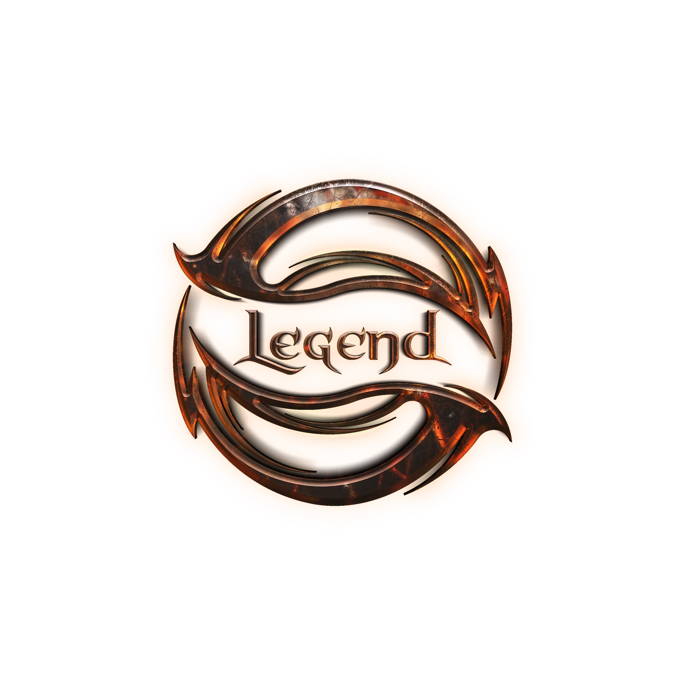
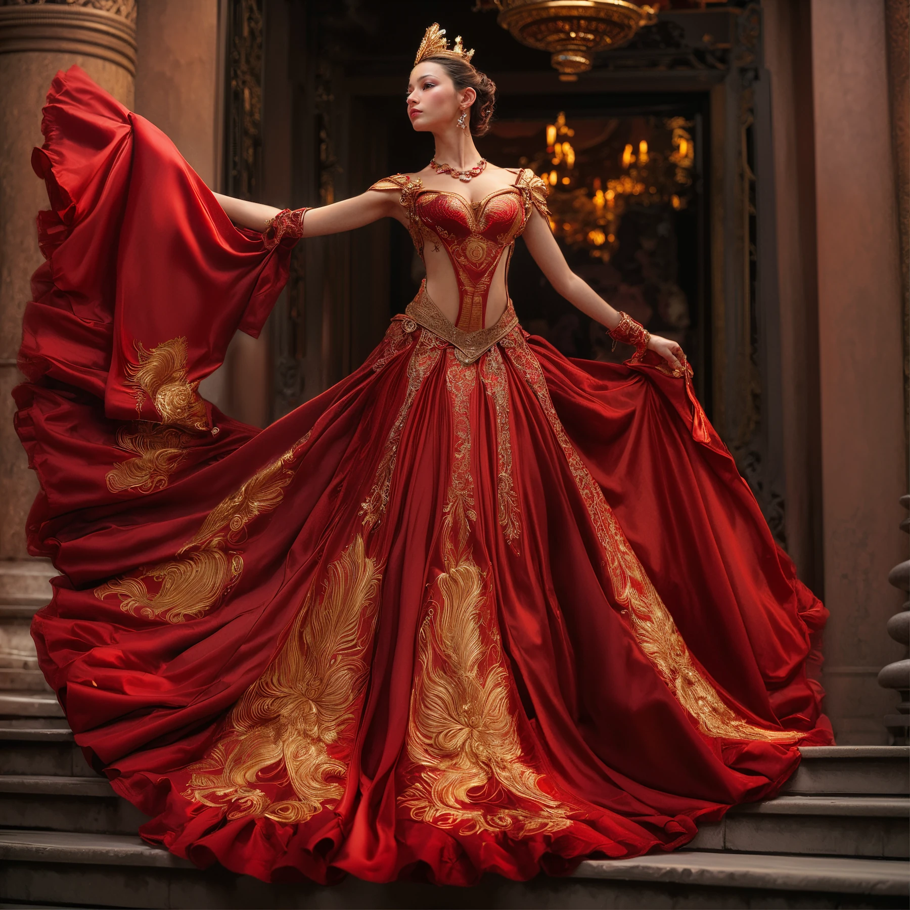
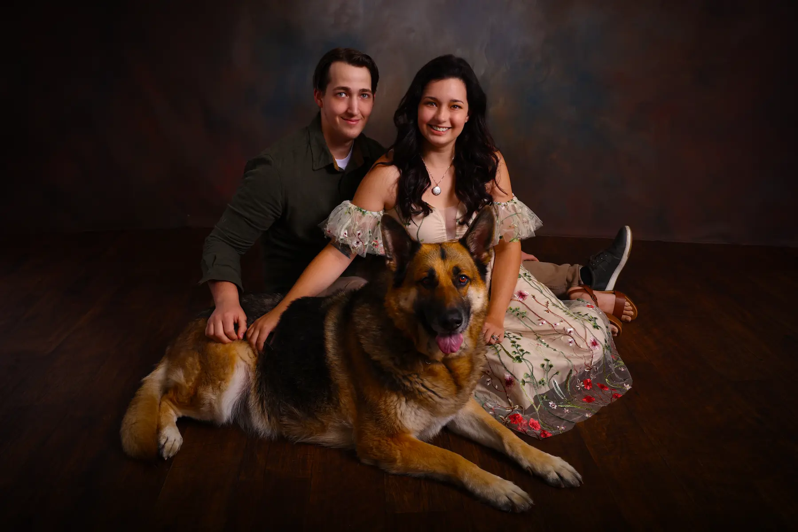
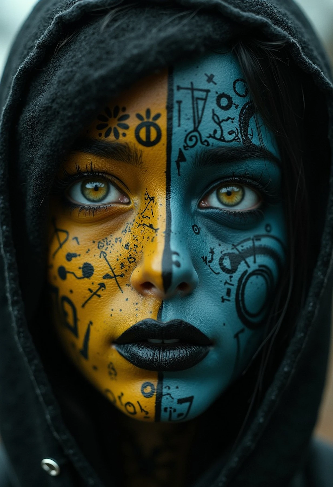
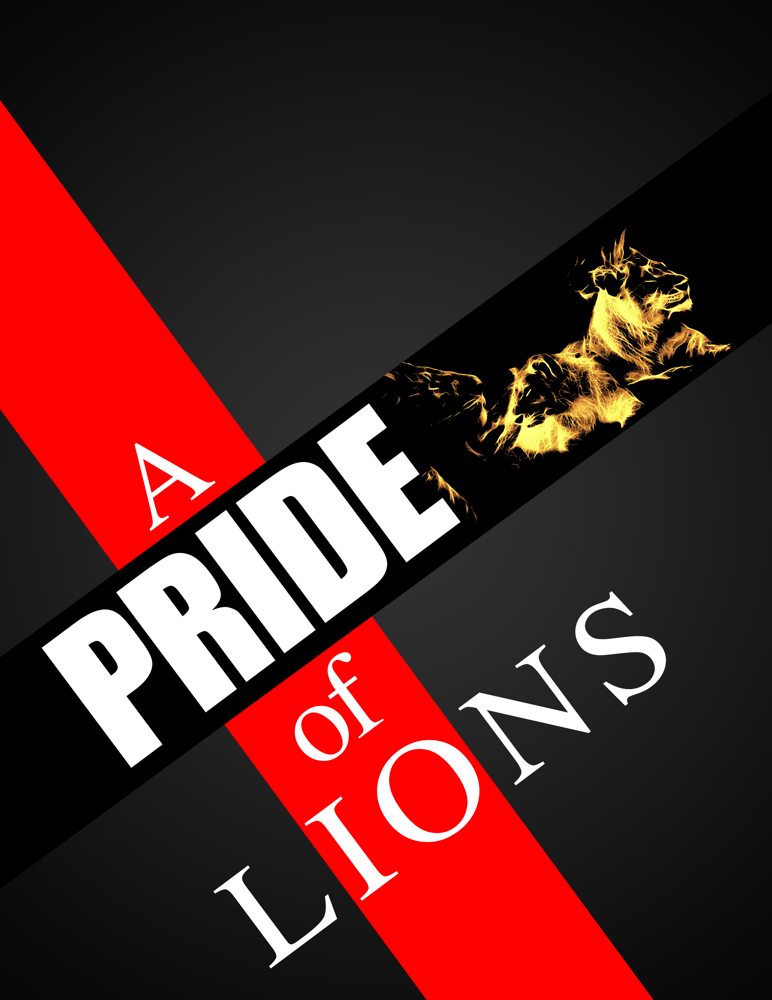
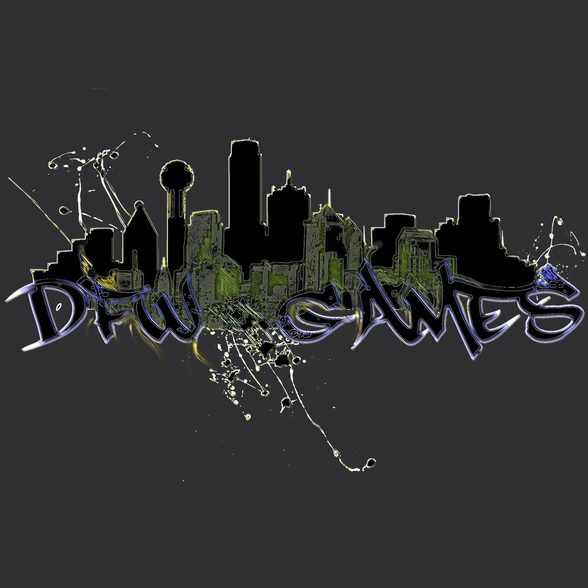

Graphic Design | Brand Identity
Design with intent — from poster art and print to complete brand identities. Every element earns its place, and every piece carries your message with clarity and force.

WEB DESIGN | PHOTOGRAPHY | GRAPHIC DESIGN | VFX | AI
Every project gets my full attention — the same know-how, precision, and creative integrity I'd demand of myself in my own personal work.
Design with intent — from poster art and print to complete brand identities. Every element earns its place, and every piece carries your message with clarity and force.

Transform your online presence with expert web design. I craft user-friendly, aesthetically intentional websites built around your brand and goals.

Capture moments with precision and artistry — then finish them to studio standard. From candid shots to controlled sessions, I shoot and retouch under one roof, start to final frame.
Cinematic effects that ground the impossible in the real. Compositing, simulation, and seamless integration — the goal is a shot that feels inevitable, not assembled.

Design in motion. Title sequences, animated identities, and graphic storytelling with cinematic pacing — where timing is as deliberate as typography.

Leverage intelligent and creative AI-powered art generation. Harness custom prompt engineering and automation pipelines to produce stunning media assets tailored to your vision.
Cinematic effects that ground the impossible in the real
Visual effects work is problem-solving disguised as spectacle. An explosion, a set extension, a composited element — none of it lands unless the light, perspective, and grain agree with the plate it lives in. My focus is that agreement: effects that feel shot, not added.
I handle the full compositing pipeline — keying, tracking, integration, and grading — so the finished shot arrives as one coherent image, not a stack of layers. Whether it's a single hero shot or effects across a full edit, the standard is the same: if you can see the seam, it isn't done.
I begin by understanding your creative vision and technical requirements. Through collaborative planning, I develop a comprehensive approach that combines artistic direction with technical precision. My workflow includes pre-visualization, asset creation, compositing, and final delivery in your preferred format.
Design with intent — from single pieces to complete identities
Graphic design is where I started, and it's the discipline underneath everything else I do. Whether it's a poster, a book cover, a campaign image, or a full rebrand, my approach is the same: understand what the piece needs to say, then make every element — type, color, light, composition — work toward saying it.
Brand identity work goes deeper than a logo. I build visual systems that hold together across every surface a brand touches, from print to screen to signage. When a client comes to me with something flat and functional, my job is to find the character it was missing and make it unmistakable.
Every project starts with the message, not the software. I dig into what the piece needs to accomplish and who it needs to reach, then explore directions before committing to one. From there it's craft: building the composition, refining the details, and delivering final files prepared for exactly where they'll live — press, screen, or both.
Transform your online presence with expert web design services
I craft aesthetically intentional, user-friendly websites tailored to your brand identity. I combine seamless UI/UX with advanced development technologies to create responsive multi-device experiences that convert visitors into customers.
Every website I design is built with performance, accessibility, and user engagement in mind. From initial concept to final deployment, I ensure your digital presence reflects the quality and professionalism of your brand while delivering exceptional user experiences across all platforms.
I start with a comprehensive discovery phase to understand your business goals, target audience, and brand identity. Through wireframing and prototyping, I create a user-centered design that balances aesthetics with functionality. My development process emphasizes clean code, responsive design, and thorough testing to ensure your website performs flawlessly across all devices and browsers.
Capture moments with precision and artistry
Professional photography services that capture your brand story with precision and artistry. From studio sessions to candid captures, I provide beautiful images that resonate and inspire, helping you tell your story through compelling visual narratives.
My photography approach combines technical expertise with creative vision. Whether capturing the perfect product shot, documenting a corporate event, or creating stunning landscape imagery, I ensure every photograph tells a story and elevates your visual communication.
I begin with a consultation to understand your vision and requirements. Through careful planning and preparation, I ensure optimal lighting, composition, and timing. My post-production workflow includes professional editing, color grading, and retouching to deliver images that exceed expectations. Final images are delivered in your preferred formats, optimized for their intended use.
Design in motion — where timing is as deliberate as typography
Motion graphics is graphic design with a fourth dimension. Every principle that makes a still piece work — hierarchy, contrast, rhythm — still applies, but now pacing, easing, and sound carry half the meaning. A title card that arrives a half-second late tells a different story than one that lands on the beat.
I've built motion graphics packages for full documentary series — titles, lower thirds, transitions, and animated graphics designed as one cohesive system across every episode. Whether it's a logo reveal, an explainer, or a complete broadcast package, I design the motion and the graphics together, not one bolted onto the other.
I start with style frames — locking the look as still designs before anything moves. Once the direction is approved, I build the animation with deliberate pacing, timed to music or narration where it applies, and deliver in whatever formats the destination needs, from broadcast masters to web-optimized versions.
Leverage intelligent and creative AI-powered art generation
With over 15 years of multidisciplinary expertise, I fuse AI prompt engineering, multimedia design, and cutting-edge automation pipelines to craft innovative visual content and dynamic user experiences. Whether building custom persona memory systems or deploying privacy-first AI tools, my work is at the forefront of creative technology.
AI Art represents the convergence of artificial intelligence and creative expression. Through sophisticated prompt engineering and iterative refinement, I generate unique visual assets that push the boundaries of digital creativity. My approach combines technical understanding of AI systems with artistic vision to produce stunning, one-of-a-kind imagery.
I start by understanding your creative goals and technical requirements. Through iterative prompt refinement and model selection, I develop a tailored approach to AI art generation. My process includes concept development, prompt engineering, iterative generation, post-processing, and final asset delivery. I work with various AI models and techniques to achieve the desired aesthetic and conceptual outcome.

4-Part Documentary Series · Producer & Motion Graphics
A 4-part documentary series on the Dead or Alive fighting game community, produced in collaboration with Brian Dawson. I conceived the series, handled all production, created every motion graphic from the opening title sequence to the lower thirds and end credits, shot and edited the footage, and color graded every episode. The series features interviews with sWooZie (Adande Thorne) and Tom Lee, Creative Director of Team Ninja. All four episodes are hosted on Team Ninja's official YouTube channel.
Production · Motion Graphics · Editing · Color Grading · Lower Thirds · Title Design
"DESIGN IS INTELLIGENCE MADE VISIBLE."
I hold a degree in Web Design and Computer Graphics — but honestly, I was already deep in this work before I stepped into a single classroom. Editing music as a kid. Manipulating images before I could afford Photoshop. Teaching myself motion graphics, video editing, and visual effects with no roadmap and no safety net. The education confirmed what practice had already built.
That foundation is why I work the way I do — with a complete creative eye across graphic design, web, photography, drone, video, motion graphics, and AI-enhanced work. One person. One vision. Concept to delivery, no handoffs, no junior substitutes.
AI isn't a threat to that. It's an extension of it. I'm building at that edge — and I can help bridge the gap for clients who know what they want but don't know how to get there yet.
If you have a creative need you're tired of splitting across five different vendors, or a vision that's never quite survived contact with execution — that's exactly the problem I solve.
The work speaks for itself. Browse recent projects below — each one built with care, craft, and intention.










Have questions or want to work together? Reach out—let's create something amazing.